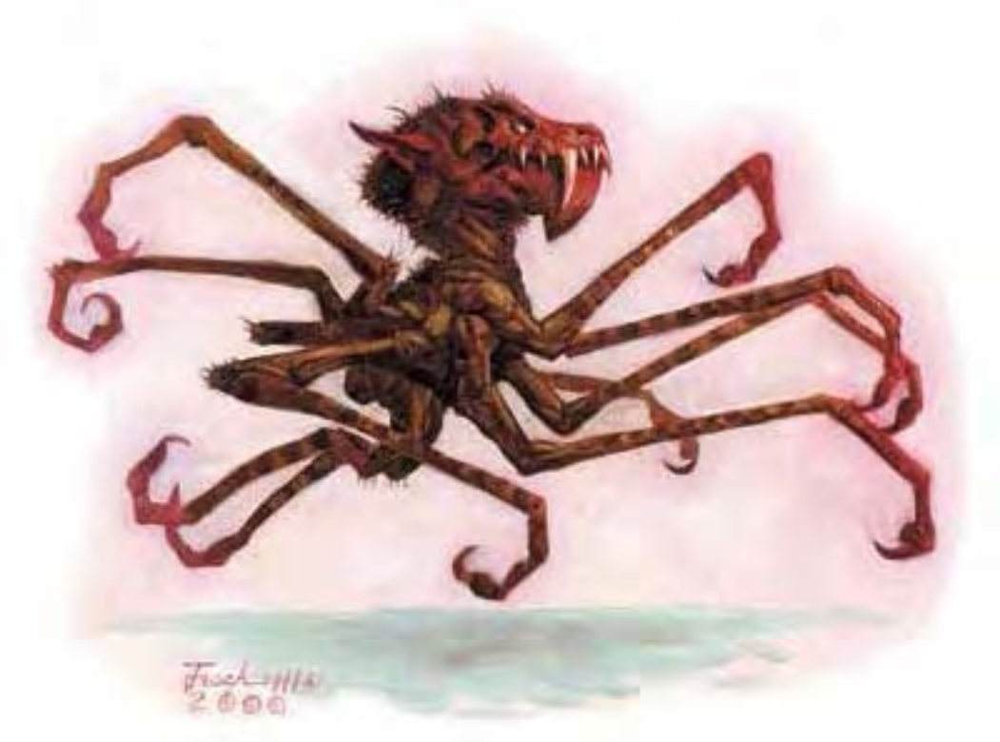

这种低等生物球茎般的飘浮在身体下，至少有一打细长爪子。他的圆头几乎被嘴巴占满，而嘴里几乎都是牙齿。
火螨在各界域内的独立空隙间移动，尤其是火元素界。他像是长有爪子和牙齿的飘浮气囊，贪得无厌地狂吃不己。
火螨的内心布满尘埃与灰烬，但对于鲜血的渴望足以让多数正常野兽甘拜下风。火螨通常有十至十五只爪子，但同时只能用四支。
火螨的身体约与狗一样大，而头又与身体一样大。他约重200磅。
火螨的攻击方式狡猾残忍到令人恐惧。这种生物会尽可能麻痹最多对手，再对付还可以活动的敌人。火螨可用爪抓或啮咬，但同一轮中无法同时使用。
麻痹凝视 (超自然)：麻痹1d6轮，30英尺。通过强韧检定 (DC=13) 则无效。豁免检定DC的调整值与魅力调整值相同。
精通擒抱 (特异)：当火螨啮咬到对手时，即可利用即时动作进行啮咬攻击 (视为擒抱)，且不会引发对方借机攻击。
吸血 (特异)：火螨可由被擒的对手身上吸血，每轮造成1点体质伤害。
飞行 (特异)：火螨可随时停止或起飞，视为即时动作。失去此能力的火螨将坠落，且每轮只能进行单动作 (移动动作或攻击动作择一)。
| 生命骰 | 4d8+7 (25HP) |
| 先攻 | +5 |
| 速度 | 5英尺 (1格)、飞行60英尺 (良好) |
| 防御等级 | 15 (+1敏捷、+4天生)、接触11、措手不及14 |
| 基本攻击/擒抱 | +4 / +6 |
| 攻击 | 爪抓+6近战 (1d4+2)；或啮咬+6近战 (1d8+3) |
| 全力攻击 | 4爪抓+6近战 (1d4+2)；或啮咬+6近战 (1d8+3) |
| 占据/触及 | 5英尺 / 5英尺 |
| 特殊攻击 | 麻痹凝视、精通擒抱、吸血 |
| 特殊能力 | 黑暗视觉60英尺、飞行、对火焰免疫、易受寒冷伤害 |
| 豁免 | 强韧+5、反射+5、意志+5 |
| 属性 | 力量14、敏捷12、体质13、智力3、感知13、魅力12 |
| 技能 | 躲藏+8、聆听+8、潜行+8、侦察+8 |
| 专长 | 精通先攻、健壮 |
| 环境 | 火元素界 |
| 组织 | 单独、成双或聚集 (3-6) |
| 宝藏 | 无 |
| 阵营 | 通常绝对中立 |
| 进化 | 5-6HD (中型)；7-12HD (大型) |
| 等级修正值 | ― |